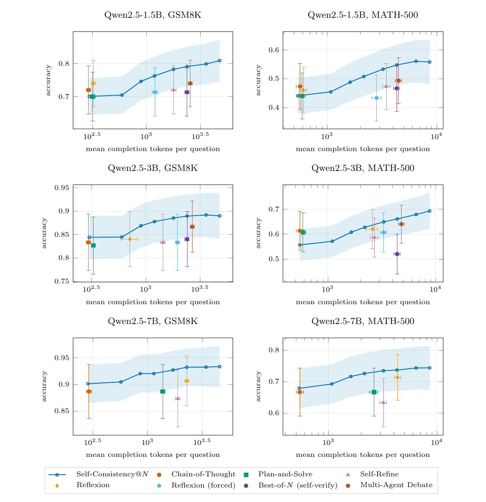
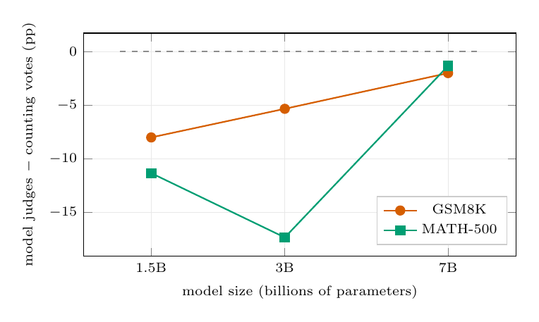

Sample More, Reflect Less: Self-Refine and Reflexion Lose to Repeated Sampling at Equal Token Cost
TL;DR
- "Sample More, Reflect Less" (arXiv 2607.28576; Iliya Mirzaei, Stony Brook) re-runs the Wang et al. (2024) "token economies" comparison as a designed experiment: seven test-time methods (CoT, Plan-and-Solve, Self-Refine, Reflexion, forced Reflexion, Best-of-N with self-verification, Multi-Agent Debate) vs. self-consistency at each method's own measured token cost, on Qwen2.5-1.5B/3B/7B, GSM8K and MATH-500, 150 paired questions, with bootstrap CIs and Holm correction.
- Of 36 comparisons, 0 beat repeated sampling, 10 are significantly worse, 26 indistinguishable — and the losers separate cleanly by mechanism: every method where the model inspects or rewrites its own output is below the cost-matched baseline in all 18 of its comparisons.
- The confound-free version: take Best-of-N's own eight samples and replace the model's pick with a majority count — identical samples, tokens, and model. Counting beats judging by 5.3–17.3 pp below 7B; at 7B the gap shrinks to −2.0/−1.3 pp and is no longer distinguishable from zero. Untrained self-evaluation, not extra compute, is where these methods lose.
Why this matters
A huge fraction of the "agentic reasoning" literature — self-critique, reflection, debate — rests on comparisons against a single chain of thought, which confounds the mechanism with the budget: generating more text raises accuracy by itself. This paper is the statistical audit that literature never ran, and its verdict is sharp enough to change defaults: below ~7B, if you have a token budget, spend it on independent samples and count, not on asking the model to evaluate itself. For anyone distilling or post-training small models, this also identifies what's actually missing — untrained self-verification is worthless at these scales, which is precisely the gap trained-verifier and RL-on-verification work targets. And methodologically, the paper's cost-matching machinery (interpolating the whole self-consistency curve from one sample pool) is cheap enough that there is no longer an excuse for reporting budget-unmatched comparisons.
The core idea
Self-consistency at any \(N\) gives a curve of accuracy vs. cost, not a point. A method is worth its cost only if it lands above that curve at its own measured spend. Cost is counted as all generated tokens — critiques, reflections, debate turns, verification — summed over every call a method makes for a question. Equations below are reconstructions of the paper's prose definitions (the paper states them in words — verify against Section 3):
where \(c(m)\) is method \(m\)'s mean generated-token cost per question and \(\hat{y}_{\mathrm{SC}}^{(N)}\) is the majority answer over \(N\) sampled chains. The headline quantity per method and setting is the paired difference against the baseline curve interpolated at the method's own cost:
reported with a 10,000-resample paired bootstrap over questions and Holm–Bonferroni correction across the seven methods within each setting.
The trick that makes per-method matching affordable: generate one pool of \(K=16\) independent chains per question, then read off self-consistency at any \(N \le K\) by subsampling without replacement (200 draws per \(N\)) — distributed exactly as running self-consistency at \(N\) would be, with only Monte-Carlo error (measured: ≤0.36 pp under a different seed).
How it works
# Equal-cost comparison protocol
for each (model, benchmark) setting: # 1.5B/3B/7B x GSM8K/MATH-500
fix 150 questions (one seed, shared by all methods)
# baseline curve
for each question: generate pool of K=16 chains at T=0.7
for N in {1,2,3,4,6,8,12,16}:
for 200 draws: subsample N chains, majority-vote,
record (correct?, sum of those N chains' tokens)
baseline curve = mean accuracy vs mean cost per N
# methods
for each of 7 methods:
run as published (never shown gold answer), cap 1024 tok/call
count EVERY generated token: critiques, reflections,
debate turns, self-verification
locate baseline accuracy at the method's own mean cost
(linear interpolation between bracketing N in (cost, acc) space)
Delta = paired per-question difference vs that matched baseline
CI: paired bootstrap (10k resamples over questions)
Holm-correct p-values across the 7 methods within the setting
grade with a validated parser (brace-matching \boxed extraction;
1,819/1,819 synthetic gold answers recovered under 6 cosmetic variants)
Two design details do a lot of work. First, Reflexion is run twice: as published (it decides for itself when to retry) and forced (always three reflect-and-retry rounds). As published, on Qwen2.5-1.5B the self-assessment judged its first answer correct on every single question in both benchmarks — the loop never fired, and "Reflexion" silently collapsed into one chain of thought. Only the forced variant tests the mechanism. Second, the grader is validated directly (a grading bug depresses all methods equally and hides in comparisons), and all 19,200 generations are released for re-grading.
Results
- Main table (36 comparisons): 0 significantly better, 10 significantly worse, 26 indistinguishable after within-setting Holm correction; 30/36 point estimates negative. The significant losses are all self-inspection methods, e.g. Best-of-N on 3B/MATH-500: −14.1 pp [−20.0, −8.4]; forced Reflexion on 7B/MATH-500: −10.1 pp [−15.0, −5.7]; Self-Refine on 7B/MATH-500: −6.3 pp [−11.1, −2.0].
- The clean split: methods that pass over their own work (Self-Refine, forced Reflexion, Best-of-N self-verify) are below the cost-matched baseline in all 18 comparisons; methods without self-assessment sit on the baseline (14/20 negative, p=0.12). The cluster-robust version — all iterative methods negative within a setting, in 6/6 settings — gives exact p=0.0156.
- Judging vs. counting, zero confound: on Best-of-N's own eight samples, the model's pick loses to the majority tally by −8.0/−11.3 pp (1.5B), −5.3/−17.3 pp (3B), and −2.0/−1.3 pp (7B, both n.s.). The self-verifier agrees with the majority on 63–95% of questions; it loses ground exactly where it disagrees.

Figure from the paper (rendered from the author's released TikZ source): the cost–accuracy frontier. A method earns its budget only by landing above the line.- The scale trend: the judging penalty shrinks monotonically with model size and reaches statistical parity at 7B. Read with Zhang et al. (2025), who show a trained verifier beats majority voting around this scale: training, not judging per se, is what makes a verifier worth its tokens.

Figure from the paper (rendered from source): the cost of letting the model pick its own winner, isolated from everything else.- Honest robustness accounting: the 1,024-token cap truncates long MATH-500 solutions, and unparseable answers (up to 16% for single-shot methods) are scored wrong; restricting to questions every method answered flips a few individual verdicts (Best-of-N on 1.5B/MATH-500 loses significance; Plan-and-Solve on 3B/MATH-500 becomes significantly positive at +8.5 pp) — flagged rather than cherry-picked. Sampling's robustness to truncation (vote methods lose <1% of answers) is real but cap-entangled.
How it connects
- CORE: Contrastive Reflection for Rapid Reasoning Gains (tracked item) — the direct tension in this tracker. CORE claims reflection-driven gains; this paper says raw self-inspection is a reliable loser at matched cost below 7B. The reconciliation to test: CORE's contrastive signal may function as training for the reflection step, which is exactly the ingredient (per the Zhang et al. crossover) that flips judging from liability to asset.
- Self-Improving Agents Should Evolve Their Benchmarks — same methodological theme from the other side: what a comparison rewards determines what you conclude. Here the missing control was cost-matching; there it was benchmark staleness. Both argue evaluation design is a first-class research object.
- UnMaskFork: Test-Time Scaling for Diffusion LMs (tracked item) — parallel-sampling test-time scaling in a different architecture family. This paper strengthens the case that the aggregation step should be a count (or trained scorer), not an untrained self-judgment, whatever generates the candidates.
- Argus: A General-Purpose Agentic Runtime — runtimes that allocate test-time compute should treat this as a routing prior: for small open models, budget goes to width (samples) rather than depth (self-critique loops), unless a trained verifier is in the loop.
Critical take
This is a model replication study — preregistered spirit, released everything, states its detectable effect size (~5–6 pp) instead of pretending nulls are zeros. Its two best findings are actually diagnostic, not adversarial: Reflexion silently degenerating into CoT (adaptive methods must report how often the adaptive part fires) and the authors catching their own Best-of-N scoring bug via cross-checks. Limits: Qwen2.5 only, ≤7B, Q8 quantization on CPU, math-only with exactly checkable answers — precisely the domain where majority voting is strongest, since answers collapse to comparable strings. On open-ended tasks (code, proofs, agentic work) counting is ill-defined and the calculus may differ; the paper concedes this. The cost measure ignores input tokens, which disadvantages sampling's rivals less than it seems (iterative methods re-feed long contexts), and the self-inspection grouping was formed after the bug fix — the authors flag it, and the fixed-in-advance grouping points the same way. The 7B parity result is a null with narrow-ish intervals, not evidence judging works there. None of this rescues untrained reflection at small scale.
If you remember three things
- At matched generated-token cost, nothing beat repeated sampling in 36 comparisons (10 significantly worse), and every significant loser asks the model to inspect its own output.
- Counting beats judging on identical samples by 5–17 pp below 7B; the penalty closes at 7B, and prior work says only trained verifiers get ahead of the tally. Untrained self-evaluation is the failing component, not extra compute.
- Report the baseline curve, not a baseline point — one pool of K samples yields the whole self-consistency frontier by subsampling, so cost-matched comparison is essentially free; and always report how often an adaptive method's adaptive part actually fired.